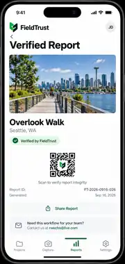

GPS Confidence
See location accuracy before you shoot. Weak indoor positioning is clearly flagged instead of silently becoming false precision.
FieldTrust helps contractors and field teams capture trustworthy work photos with GPS confidence, before/after alignment, offline-first saving, and verified reports.
Questions? rwecho@live.com

FieldTrust stays intentionally focused. It is not a full construction ERP. It is the fastest path from a job-site photo to clear, trustworthy proof.
See location accuracy before you shoot. Weak indoor positioning is clearly flagged instead of silently becoming false precision.
Overlay the original Before image at low opacity so crews can line up the After shot from the same angle.
A photo is considered captured only after it is safely persisted on the device. Sync happens afterward.
Generate client-ready proof with timestamps, location context, report ID, and an integrity verification entry point.
Speak a quick note on site. FieldTrust turns field shorthand into clean project context without slowing the crew down.
Keep photos connected to the right project so months-later retrieval does not depend on camera-roll memory.
Find the correct job and get on-site context immediately.
Take Before, After or Progress photos with GPS confidence visible.
Use voice or text while the details are still fresh.
Turn field records into a report that clients and stakeholders can understand.
The UI prototypes use public U.S. infrastructure project names to test realistic workflows and information density. FieldTrust is not affiliated with these projects or agencies.
Nearby, on-site and offline states stay visible so the field worker always knows where a photo belongs.

Verification status, report ID, generated time and sharing controls are readable at a glance.
We are validating the product with small crews first: teams that need fast proof without the weight and cost of a full field-operations suite.
We are speaking with contractors, inspectors, field-service teams and small crews to confirm exactly what belongs in the first release. Your workflow will directly influence the product.